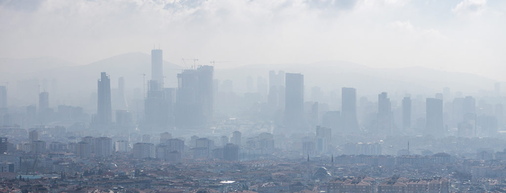
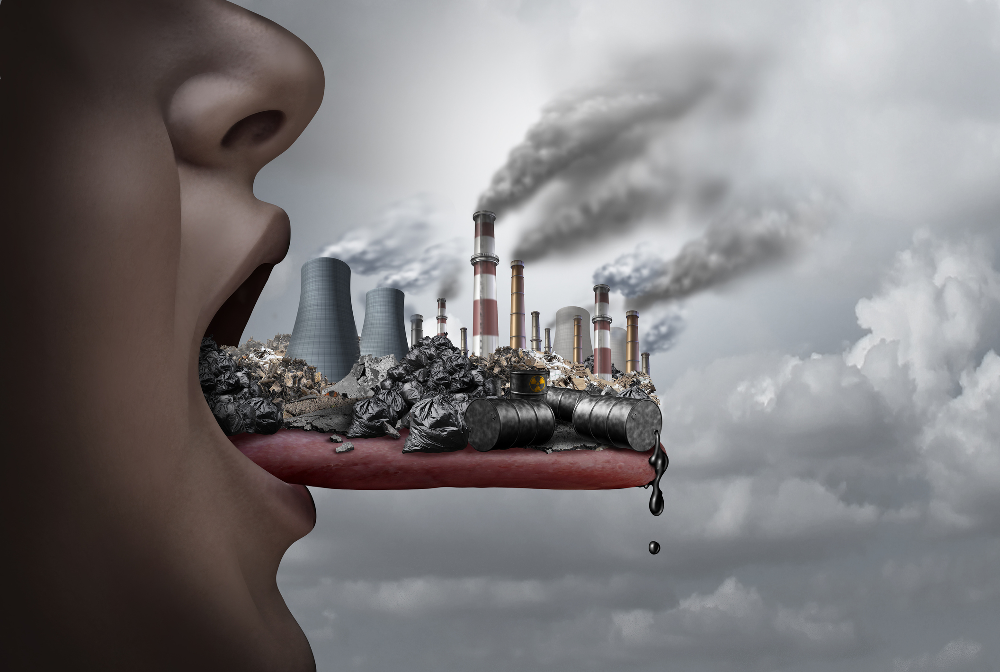

La contaminación atmosférica refiere a la presencia, en las distintas capas de aire que componen la atmósfera terrestre, de sustancias y formas de energía ajenas a su constitución natural y que pueden representar una fuente de riesgos, daños y molestias para la vida tal y como la conocemos.
Así como el agua o la tierra, el aire que compone la atmósfera también mantiene un balance químico y energético necesario para sostener las condiciones que hacen posible la vida, y cuya alteración repercute en otros ciclos importantes, como el del agua. La presencia de sustancias gaseosas o sólidas en el aire desvirtúa este balance, pudiendo tener consecuencias locales, regionales o incluso a escala global, como es el efecto invernadero.
Desde la Revolución Industrial el ser humano ha contribuido con la adulteración del contenido de la atmósfera de manera significativa, y a ello se atribuyen hoy numerosas consecuencias climáticas y de salud pública.
TIPOS CONTAMINACIÓN ATMOSFÉRICA
Gaseosos Se trata de sustancias simples o complejas en diversas concentraciones, que son liberadas a la atmósfera como vapores y gases livianos, como los liberados durante la combustión de materia orgánica fósil (gasolina, carbón, petróleo). Estos gases permanecen en la atmósfera y allí protagonizan reacciones químicas imprevisibles y descontroladas, dando origen a nieblas tóxicas, lluvias ácidas y otros fenómenos. Algunos ejemplos de estos gases son el monóxido de carbono, el CFC, los óxidos de nitrógeno.
Sólidos en suspensión Se trata de materiales sólidos poco afectados por la gravedad, que pueden permanecer en el aire, deteriorando su calidad y pudiendo ser respiradas junto con el aire. A veces son lo suficientemente oscuras y grandes como para verlas, en forma de humo. Ejemplos de ello son las cenizas volcánicas y los aerosoles.

CAUSAS Y CONSECUENCIAS
CAUSAS Las causas de la contaminación de la atmósfera son variadas, pero principalmente tienen que ver con:
Las erupciones volcánicas, que arrojan ceniza y gases subterráneos al aire.
La actividad industrial, cuyas reacciones químicas subproducen gases, tóxicos o no, que al no tener uso son liberados a la atmósfera.
El uso de combustibles fósiles, como la gasolina y los derivados petroleros, para la obtención de energía eléctrica o la movilización vehicular.
El uso de aerosoles con CFC, prohibidos desde hace décadas por su responsabilidad en la destrucción de la capa de ozono.
Incendios forestales, que arrojan montones de dióxido de carbono y de humo al aire.

Consecuencias Las principales consecuencias del deterioro de la atmósfera son: Problemas respiratorios. A nivel local, el aire contaminado puede incidir sobre la salud de las personas y los animales al ser respirado, ya que contiene sustancias químicas cancerígenas, tóxicas o venenosas, cuyo efecto en el organismo puede ser letal e incluso prolongado. Lluvias acidas. Muchos elementos orgánicos reaccionan en la atmósfera con el vapor de agua y forman variantes de ácido o de mezclas corrosivas, que luego se precipitan a la tierra con la lluvia, en lo que normalmente se denominan lluvias. Contaminación del agua. La contaminación del aire y del agua se retroalimentan, ya que el agua al evaporarse puede llevar consigo diversas sustancias tóxicas que luego permanecen en la atmósfera. Destrucción de la capa de ozono. Muchos gases ascienden a las capas superiores de la atmósfera, en donde se halla la capa de ozono (O3) que nos protege del impacto directo de los rayos solares. Allí, reaccionan con este elemento y agujerean esta barrera protectora. Efecto invernadero. La acumulación de gases pesados en la atmósfera hace las veces de una barrera artificial que no deja huir el calor ambiental, concentrándolo y haciendo que aumente la temperatura del mundo.
GRACIAS POR LA ATENCIÓN Aquí un video hecho para la clase